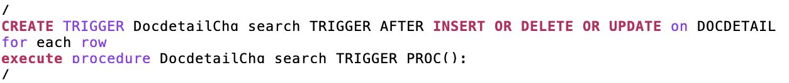
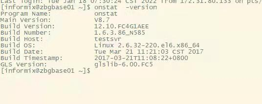

2022-01¶
2022-01-04¶
2022-01-04 09:15:39 |
我 |
你明天去上海吗 |
2022-01-04 09:16:09 |
你 |
还没定呢 |
2022-01-04 09:16:14 |
你 |
我问问平娟 |
2022-01-04 09:16:22 |
我 |
嗯 |
2022-01-04 09:28:40 |
你 |
我明天去上海，后天见张小丰 |
2022-01-04 09:28:57 |
你 |
这次你先别去了 我先跟他聊去 |
2022-01-04 09:29:18 |
你 |
如果第一天聊的还行 第二天需要更细节的技术，你等我通知 |
2022-01-04 09:29:39 |
你 |
我估计一次肯定完事不了 |
2022-01-04 09:29:46 |
我 |
好的 |
2022-01-04 10:41:45 |
你 |
提供开放API：产品部署/卸载、日志、监控、运维、实例管理接口，并提供开放API接口功能说明、使用说明 |
2022-01-04 10:43:01 |
我 |
这个咱们当初让新数去做 |
2022-01-04 11:00:00 |
我 |
一般说开放 API 指的是 RESTful接口，以前老田他们做过 8a 的，8s 的好像没有 |
2022-01-04 11:27:03 |
你 |
这个好做吗 |
2022-01-04 11:27:37 |
我 |
难度不大，就是繁琐 |
2022-01-04 11:27:58 |
我 |
估计得多投入几个人 |
2022-01-04 11:28:34 |
我 |
你做核酸了吗 |
2022-01-04 11:44:00 |
你 |
没有 |
2022-01-04 11:44:23 |
你 |
|
2022-01-04 11:45:12 |
我 |
问问老田吧 |
2022-01-04 11:45:46 |
你 |
不需要做核酸 |
2022-01-04 11:46:03 |
我 |
👌 |
2022-01-04 13:44:52 |
你 |
超长报错那个需求，老田在 JDBC 上做了一版，你觉得在接口上做靠谱吗 |
2022-01-04 13:45:04 |
你 |
我想做成产品级功能 |
2022-01-04 13:45:15 |
我 |
现在只有这一条路，改 Server 风险更大 |
2022-01-04 13:45:33 |
你 |
那讨论下 产品化了吧 |
2022-01-04 13:45:48 |
我 |
咱们很多内置功能依赖超长截断，如果报错就 af 了 |
2022-01-04 13:46:05 |
你 |
在 Server 做肯定是走不通的 |
2022-01-04 13:47:14 |
我 |
其实接口上也只能做到现在这样了，像 insert select 这样的接口也没辙 |
2022-01-04 14:00:39 |
我 |
[链接] 群聊的聊天记录 |
2022-01-04 14:11:58 |
你 |
好 |
2022-01-04 14:44:05 |
你 |
葛娜把实例管理接口 的截图截成了 port 端口 |
2022-01-04 14:44:06 |
你 |
哈哈 |
2022-01-04 14:44:21 |
我 |
😁 |
2022-01-04 15:03:22 |
你 |
易华录的说 rtsync 被他们反编译了 |
2022-01-04 15:03:28 |
你 |
。。。 |
2022-01-04 15:03:39 |
我 |
哈哈 |
2022-01-04 15:04:48 |
我 |
是李杰告诉你的吗 |
2022-01-04 15:04:59 |
你 |
上次吃饭君总告诉我的 |
2022-01-04 15:05:14 |
我 |
嗯 |
2022-01-04 15:05:26 |
我 |
你明天几点的车 |
2022-01-04 15:05:33 |
你 |
还没买票呢 |
2022-01-04 15:30:35 |
你 |
GCI 的手册你们写？ |
2022-01-04 15:31:11 |
我 |
你有模版吗？我让王敬强写吧 |
2022-01-04 15:31:25 |
你 |
我找找 |
2022-01-04 15:31:40 |
你 |
GBase 8s V8.8 GCI:GCCI 编程指南.pdf |
2022-01-04 15:32:12 |
你 |
等我找下 word |
2022-01-04 15:47:57 |
你 |
赵总又开始对付了 |
2022-01-04 15:48:05 |
你 |
各种对付 |
2022-01-04 15:48:06 |
我 |
是 |
{kind=link}
2022-01-05¶
{kind=link}
{kind=link}
{kind=link}
{kind=link}
2022-01-06¶
{kind=link}
{kind=link}
{kind=link}
{kind=link}
{kind=link}
{kind=link}
{kind=link}
{kind=link}
{kind=link}
2022-01-07¶
2022-01-07 07:44:28 |
你 |
起床了吗 |
2022-01-07 07:45:27 |
我 |
起了，你怎么起的这么早 |
2022-01-07 07:45:37 |
你 |
我早醒了 |
2022-01-07 07:45:45 |
你 |
睡不好 |
2022-01-07 07:46:34 |
我 |
啊，累不累 |
2022-01-07 07:46:43 |
你 |
累 |
2022-01-07 07:46:56 |
你 |
收拾好了出门了吗 |
2022-01-07 07:47:05 |
你 |
我也得起床了 |
2022-01-07 07:47:34 |
我 |
出门了，你几点做核酸 |
2022-01-07 08:29:17 |
你 |
发票开专票还是普票？ |
2022-01-07 08:31:26 |
我 |
普票吧 |
2022-01-07 08:31:46 |
我 |
你问问维群 |
2022-01-07 08:33:18 |
你 |
专票 |
2022-01-07 10:35:45 |
你 |
方便吗 |
2022-01-07 10:35:49 |
你 |
李杰那边又出事了 |
2022-01-07 10:35:57 |
你 |
唉 |
2022-01-07 10:36:14 |
你 |
两边都得罪了 |
2022-01-07 10:36:21 |
我 |
等一会，我在开会，泛微的事情 |
2022-01-07 10:36:34 |
我 |
开完了我打给你 |
2022-01-07 10:36:41 |
你 |
好 |
2022-01-07 10:41:45 |
我 |
[电话] |
2022-01-07 10:43:01 |
我 |
我完事了 |
2022-01-07 10:53:55 |
你 |
等会 |
2022-01-07 10:54:03 |
你 |
我去趟卫生间 |
2022-01-07 10:54:15 |
你 |
[电话] |
2022-01-07 10:54:54 |
我 |
嗯嗯，不急 |
2022-01-07 11:06:29 |
你 |
[电话] |
2022-01-07 12:52:59 |
我 |
李杰去找李君了，晚点我再和她聊 |
2022-01-07 13:12:32 |
你 |
又找李君做甚呢 |
2022-01-07 13:13:05 |
我 |
估计还是想让李君出面吧 |
2022-01-07 13:20:25 |
你 |
唉 |
2022-01-07 13:20:40 |
你 |
刚才给我打电话，情绪被李君稳住了[捂脸] |
2022-01-07 13:20:53 |
我 |
还好 |
2022-01-07 13:21:07 |
你 |
她说要找你是吗 |
2022-01-07 13:21:14 |
你 |
又不去找你了 |
2022-01-07 13:21:29 |
我 |
待会我问问她吧 |
2022-01-07 13:35:11 |
我 |
[链接] 王雪松和李杰的聊天记录 |
2022-01-07 13:41:09 |
你 |
无语 |
2022-01-07 13:43:10 |
我 |
能有这个认识也算是有进步了[捂脸] |
2022-01-07 17:10:07 |
你 |
[链接] 李杰和李辉的聊天记录 |
2022-01-07 17:11:32 |
我 |
唉，幸好结果还好 |
2022-01-07 17:12:26 |
你 |
好坏都未知 |
2022-01-07 17:13:12 |
我 |
说实话我没有完全理解老吉的行为，感觉有点奇怪 |
2022-01-07 17:13:31 |
我 |
老韩的行为还可以理解 |
2022-01-07 17:14:02 |
你 |
伤了老吉 后果更坏 |
2022-01-07 17:14:02 |
我 |
我其实对老韩和老吉说啥了比较感兴趣[偷笑] |
2022-01-07 17:14:21 |
你 |
me too |
2022-01-07 17:15:03 |
我 |
再看吧，从老吉这次做的感觉他心胸不大，这和我以前对他的感觉不一样 |
2022-01-07 17:15:20 |
你 |
我也觉得奇怪 |
2022-01-07 17:15:27 |
你 |
具体细节下来我问李杰吧 |
2022-01-07 17:15:33 |
我 |
嗯嗯 |
2022-01-07 17:15:34 |
你 |
说实在的我也没啥兴趣听 |
2022-01-07 17:15:45 |
你 |
大概都差不多 |
2022-01-07 17:16:27 |
你 |
我总觉得老韩城府很深 |
2022-01-07 17:16:36 |
你 |
不单纯 |
2022-01-07 17:16:53 |
我 |
肯定的，从这次竞聘就能看出来。 |
2022-01-07 17:58:07 |
你 |
[电话] |
2022-01-07 18:13:44 |
你 |
我一会就到家了，别给我发微信了 |
2022-01-07 18:14:05 |
我 |
嗯嗯 |
2022-01-10¶
2022-01-10 08:22:13 |
你 |
|
2022-01-10 08:22:18 |
你 |
太给力了 |
2022-01-10 08:22:29 |
你 |
这个是你们弄的吗 |
2022-01-10 08:23:08 |
我 |
我不知道，应该是建辉写的吧 |
2022-01-10 08:23:50 |
我 |
反正我让他们春节前完成[偷笑] |
2022-01-10 08:24:23 |
你 |
哈哈 |
2022-01-10 08:24:28 |
你 |
挺好挺好 |
2022-01-10 14:08:10 |
你 |
你还是不放心 |
2022-01-10 14:40:02 |
你 |
泛微那我以为是研发的结论呢，我还说这次咋这么利索 |
2022-01-10 14:40:06 |
你 |
原来是测试的 |
2022-01-10 14:40:24 |
我 |
没事，我们的进度也差不多 |
2022-01-10 14:40:32 |
你 |
行 |
2022-01-10 15:09:02 |
你 |
[链接] zxf和李辉的聊天记录 |
2022-01-10 15:09:07 |
你 |
完了。。。 |
2022-01-10 15:09:13 |
你 |
你说的就是这样的吧 |
2022-01-10 15:09:51 |
我 |
不是，是带着declare |
2022-01-10 15:10:06 |
我 |
这样的我有办法 |
2022-01-10 15:10:41 |
你 |
你那有样例吗 |
2022-01-10 15:11:34 |
你 |
|
2022-01-10 15:12:01 |
我 |
在密网呢 |
2022-01-10 15:12:39 |
你 |
4trigger.sql |
2022-01-10 15:12:42 |
你 |
我外网有 |
2022-01-10 15:13:28 |
你 |
语音方便吗 |
2022-01-10 15:13:29 |
我 |
稍等，我看一下 |
2022-01-10 15:13:39 |
我 |
老田打电话呢 |
2022-01-10 15:18:46 |
我 |
:st:`create or REPLACE TRIGGER Tri_U_CptCapitalAssortment after update ON CptCapitalAssortment FOR each row when(new.assortmentmark<>’’ or new.assortmentmark <> null) Declare groupid_1 integer ;
end ;` |
2022-01-10 15:19:12 |
我 |
这样的，文件里第一个就是 |
2022-01-10 15:19:38 |
我 |
有 declare 关键字 |
2022-01-10 15:21:16 |
你 |
[链接] 李辉和zxf的聊天记录 |
2022-01-10 15:21:56 |
你 |
这样的可以不用考虑 |
2022-01-10 15:22:08 |
我 |
👌 |
2022-01-10 15:22:41 |
你 |
PG.2110.05.zip |
2022-01-10 15:23:32 |
你 |
这个是 PG 的脚本 |
2022-01-10 15:23:45 |
你 |
PG 的自增列是内置数据类型实现的 |
2022-01-10 15:24:05 |
我 |
嗯，咱们也有 BigSerial |
2022-01-10 15:24:19 |
你 |
但是咱们要走 Oracle 路线 |
2022-01-10 15:25:14 |
你 |
泛微适配问题记录单-20220107.xlsx |
2022-01-10 15:25:18 |
我 |
没事，这个再商量。sequence 这种也应该能做 |
2022-01-10 15:27:59 |
我 |
这个是测试的吧 |
2022-01-10 15:28:21 |
我 |
能语音吗，打字太累了 |
2022-01-10 15:31:59 |
你 |
== |
2022-01-10 15:42:48 |
你 |
可以了 |
2022-01-10 15:43:00 |
你 |
[电话] |
2022-01-10 15:43:07 |
我 |
等一下，我打电话呢 |
2022-01-10 15:43:08 |
你 |
[电话] |
2022-01-10 15:51:08 |
我 |
[电话] |
2022-01-10 15:53:24 |
你 |
 |
2022-01-10 16:02:54 |
你 |
李杰在楼下呢 |
2022-01-10 16:03:04 |
你 |
我们都在七楼办公 |
2022-01-10 16:03:30 |
你 |
我在七楼楼上 |
2022-01-10 16:03:41 |
我 |
嗯嗯 |
2022-01-10 16:12:53 |
我 |
[电话] |
2022-01-10 16:14:00 |
你 |
对了 忘跟你说了 |
2022-01-10 16:14:05 |
你 |
赵景喜不来了又 |
2022-01-10 16:14:17 |
我 |
太好了 |
2022-01-10 16:17:50 |
你 |
嗯 |
2022-01-10 16:17:58 |
你 |
他来了就轻松了 |
2022-01-10 16:18:05 |
你 |
不来就还得干 |
2022-01-10 16:18:39 |
我 |
易华录有消息了吗 |
2022-01-10 16:21:52 |
你 |
今天李君又联系新领导 说给推进一下 |
2022-01-10 16:22:15 |
我 |
他们办事也挺墨迹的 |
2022-01-10 17:26:14 |
你 |
不说了 |
2022-01-10 17:26:17 |
你 |
一会我老公下班了 |
2022-01-10 17:26:28 |
我 |
OK |
{kind=link}
{kind=link}
{kind=link}
2022-01-11¶
2022-01-11 13:13:13 |
你 |
优化.sql |
2022-01-11 13:13:30 |
你 |
江淮大数据的in性能提升 |
2022-01-11 13:13:56 |
你 |
3个sql把exist改成in，1个有效果 |
2022-01-11 13:14:33 |
我 |
👌 |
2022-01-11 13:21:30 |
你 |
|
2022-01-11 13:23:46 |
你 |
四川移动的事 你看见了吧 |
2022-01-11 13:23:53 |
你 |
这个是江淮大数据 |
2022-01-11 13:24:05 |
我 |
看见了 |
2022-01-11 13:24:43 |
你 |
等下午开会吧 |
2022-01-11 13:25:31 |
我 |
嗯 |
2022-01-11 13:53:36 |
你 |
[链接] zxf和李辉的聊天记录 |
2022-01-11 13:53:46 |
你 |
这两张系统表也得兼容 |
2022-01-11 13:54:09 |
你 |
就怕上来就说都做成一样，我们就惨了 |
2022-01-11 13:54:53 |
我 |
系统表比较麻烦 |
2022-01-11 13:55:16 |
你 |
是 |
2022-01-11 14:29:09 |
你 |
user_tables user_tab_columns user_constraints user_objects user_ind_columns v$database v$datafile dba_users |
2022-01-11 15:33:26 |
你 |
user开头的系统表要优先实现 |
2022-01-11 15:33:33 |
你 |
泛微反馈的 |
2022-01-11 15:33:48 |
我 |
好的 |
2022-01-11 16:00:04 |
你 |
老王，有空吗？参加个生态的会 |
2022-01-11 16:02:47 |
我 |
我在开会，课题的事情 |
2022-01-11 16:14:32 |
你 |
没事，我弄吧 |
2022-01-11 18:08:38 |
你 |
[电话] |
2022-01-12¶
{kind=link}
2022-01-13¶
2022-01-13 10:16:03 |
你 |
赵总安排的 冀辉给研发培训 这事你参加吗 |
2022-01-13 10:16:10 |
你 |
冀辉一直跟我说 不会弄 |
2022-01-13 10:16:16 |
你 |
在赵总那答应的好好的 |
2022-01-13 10:16:55 |
我 |
我不参加了，这事从一开始我就没参与 |
2022-01-13 11:46:59 |
你 |
研发今天有人上班吗？ |
2022-01-13 11:46:59 |
你 |
晋商银行 OA 又宕机了 |
2022-01-13 11:47:00 |
我 |
有吧 |
2022-01-13 11:47:16 |
我 |
好像建辉上班了 |
2022-01-13 11:47:26 |
你 |
我让建辉看看吧 |
2022-01-13 11:47:59 |
我 |
他这个什么信息都没有，连af都没有 |
2022-01-13 11:48:07 |
你 |
你知道了啊 |
2022-01-13 11:48:26 |
我 |
不是发邮件了吗 |
2022-01-13 11:48:31 |
你 |
哦哦 |
2022-01-13 11:48:33 |
你 |
好吧 |
2022-01-13 11:49:08 |
我 |
我怀疑和云平台相关 |
2022-01-13 11:49:26 |
我 |
不知道是不是底层API有问题 |
2022-01-13 11:49:49 |
你 |
如果我断电 数据库会出 AF 吗 |
2022-01-13 11:50:07 |
我 |
不会 |
2022-01-13 17:25:45 |
你 |
|
2022-01-13 17:26:31 |
你 |
什么情况 |
2022-01-13 17:27:09 |
我 |
我今天请假了，他们这是假传圣旨呀 |
2022-01-13 17:27:25 |
你 |
|
2022-01-13 17:27:56 |
我 |
昨天不是金民第一嘛，早上开会我安排了 |
2022-01-13 17:28:04 |
我 |
他们说的是这事吧 |
2022-01-13 17:28:20 |
你 |
现在 暴雷的项目可多了 |
2022-01-13 17:28:42 |
我 |
[捂脸] |
2022-01-13 17:29:48 |
我 |
所以就是谁最着急谁优先级最高，现在泸州银行是不是已经忘了 |
2022-01-13 18:09:35 |
你 |
[电话] |
2022-01-13 18:25:25 |
我 |
？ |
2022-01-13 18:32:47 |
你 |
等会 |
2022-01-13 18:33:44 |
你 |
赵总还是让改 SQL |
2022-01-13 18:34:45 |
我 |
要不你先和销售打电话说一下半年后给版本 |
2022-01-13 18:35:02 |
你 |
不用 |
2022-01-13 18:35:10 |
我 |
看看能不能过这关吧 |
2022-01-13 18:35:53 |
你 |
这个改 SQL 能快吗 |
2022-01-13 18:36:05 |
我 |
希望不大 |
2022-01-13 18:37:36 |
我 |
研发和我反馈的distinct那张表有主键，distinct是不是就没意义了，可以去掉distinct |
2022-01-13 18:38:48 |
你 |
FROM` |
2022-01-13 18:42:54 |
我 |
咱们的 Distinct 会把所有列合在一起做，这样就会导致性能非常差 |
{kind=link}
{kind=link}
2022-01-14¶
2022-01-14 10:14:50 |
我 |
[链接] 刘建辉的聊天记录 |
2022-01-14 10:15:10 |
我 |
你看一下这个计划，3 月底是不是来不及了 |
2022-01-14 10:17:00 |
你 |
计划1月底就得去测试的 |
2022-01-14 10:17:17 |
你 |
1月底是初始化脚本测试，3月底是联调结束 |
2022-01-14 10:17:41 |
你 |
能再快点吗 |
2022-01-14 10:17:43 |
我 |
视图是联调还是脚本里面的 |
2022-01-14 10:17:55 |
我 |
可以，我再加人吧 |
2022-01-14 10:17:59 |
你 |
应该是联调里的 |
2022-01-14 10:18:25 |
我 |
那把视图放到二月初吧 |
2022-01-14 10:18:28 |
你 |
|
2022-01-14 10:18:35 |
你 |
老田是不想干活了吗 |
2022-01-14 10:18:59 |
我 |
是，他有想走的想法了[捂脸] |
2022-01-14 10:19:15 |
我 |
被老赵折腾的 |
2022-01-14 10:20:41 |
你 |
自己想走了 非得找个外在理由 |
2022-01-14 10:20:49 |
你 |
想走不还没走么 |
2022-01-14 10:21:55 |
你 |
我还想走呢，不一直干活呢吗 |
2022-01-14 10:22:17 |
我 |
他就那样 |
2022-01-14 10:22:37 |
我 |
我看 rd 只有 8.5.23 送测了 |
2022-01-14 10:23:25 |
我 |
8.5.24 送测了 |
2022-01-14 10:24:26 |
你 |
|
2022-01-14 10:24:39 |
你 |
user_tables 建个视图就行吧 |
2022-01-14 10:24:41 |
我 |
行吧，我们自己找吧 |
2022-01-14 10:25:12 |
我 |
这几个都是建新的视图 |
2022-01-14 10:25:59 |
你 |
你去公司了吗 |
2022-01-14 10:26:05 |
我 |
是的 |
2022-01-14 10:52:27 |
我 |
|
2022-01-14 10:52:31 |
我 |
这个应该让你打分 |
2022-01-14 10:53:07 |
你 |
好么 |
2022-01-14 10:53:29 |
你 |
2021年度工作总结.docx |
2022-01-14 10:56:24 |
我 |
[链接] 群聊的聊天记录 |
2022-01-14 11:17:53 |
你 |
这个文档我没见过 |
2022-01-14 11:20:06 |
我 |
刚才刘建志发给我们的，说按照这个写 |
2022-01-14 11:20:12 |
我 |
研发的我让吕迅去写了 |
2022-01-14 11:20:26 |
你 |
那我是不是不用写了 |
2022-01-14 11:20:45 |
我 |
你写产品的，我们只是写研发部的 |
2022-01-14 11:21:00 |
你 |
哪个是产品的？ |
2022-01-14 11:21:05 |
你 |
哪个是研发的 |
2022-01-14 11:22:13 |
我 |
你写的是产品规划，大版本的，我们写的是细节部分，包括具体的功能、现场项目、技术预研 |
2022-01-14 11:23:46 |
你 |
这个文档是老陈写的吗 |
2022-01-14 11:24:12 |
我 |
对 |
2022-01-14 11:24:42 |
你 |
那是不是该老赵写[偷笑] |
2022-01-14 11:25:07 |
我 |
对呀，本来就应该他写 |
2022-01-14 11:25:22 |
你 |
或者该刘建志写 |
2022-01-14 11:25:54 |
我 |
本来应该是自顶向下，现在变成了自底向上[捂脸] |
2022-01-14 11:26:10 |
你 |
是啊 |
2022-01-14 11:26:14 |
你 |
不会写 |
2022-01-14 11:26:24 |
你 |
这份文档也没有规划的内容 |
2022-01-14 11:26:49 |
我 |
去年规划是单独写的 |
2022-01-14 11:28:35 |
我 |
15 分。赵总在 IPD、产品研发方向、高可用、SQL 优化、现场问题解决等方面给予了全面、具体的指导。对产品的研发和演进提供了有力的支持。 写老赵的，发给王欣了 |
2022-01-14 12:15:21 |
我 |
泛微计划表.xlsx |
{kind=link}
{kind=link}
{kind=link}
2022-01-17¶
2022-01-17 09:34:03 |
我 |
你们屋来了一个新人 |
2022-01-17 09:36:18 |
你 |
是 |
2022-01-17 09:41:59 |
你 |
应届生，我招来的 |
2022-01-17 09:42:21 |
我 |
嗯嗯 |
2022-01-17 10:57:34 |
我 |
咱们 GB18030 是在哪个版本？好像金民的版本不支持 |
2022-01-17 10:57:49 |
我 |
我怀疑他们这些问题和这个都相关 |
2022-01-17 10:58:03 |
我 |
就是咱们现在复现不了，没法证明 |
2022-01-17 11:04:55 |
你 |
金民的版本应该是不支持 |
2022-01-17 11:04:59 |
你 |
上次查过一次 |
2022-01-17 11:05:13 |
你 |

|
2022-01-17 11:05:22 |
你 |
这个你应该收到了吧 |
2022-01-17 11:05:27 |
我 |
没有 |
2022-01-17 11:05:48 |
你 |
？ |
2022-01-17 11:05:51 |
你 |
这个群没你吗 |
2022-01-17 11:06:23 |
我 |
我没见过，没准是销售的群 |
2022-01-17 11:06:33 |
你 |
有可能 |
2022-01-17 11:06:48 |
你 |
李君给我的 估计是张益给李凯看的 |
2022-01-17 11:06:57 |
我 |
哦哦 |
2022-01-17 14:08:13 |
我 |
老赵又打盹呢 |
2022-01-17 14:08:21 |
你 |
。。。 |
2022-01-17 14:08:25 |
你 |
天天睡 |
2022-01-17 14:17:08 |
我 |
他们为啥是技术开发 |
2022-01-17 14:17:13 |
我 |
这事不对呀 |
2022-01-17 14:17:41 |
你 |
我觉得也不对 |
2022-01-17 14:22:01 |
我 |
泛微这事和葛娜他们什么关系 |
2022-01-17 14:22:11 |
我 |
她说的不行是啥事呀 |
2022-01-17 14:22:18 |
你 |
兼容性他们测试 |
2022-01-17 14:22:25 |
你 |
就是梳理不兼容的特性 |
2022-01-17 14:25:23 |
你 |
你们按照你们的计划做吧 |
2022-01-17 14:25:30 |
你 |
先不用管新增的特性 |
2022-01-17 14:25:41 |
我 |
好 |
2022-01-17 14:31:16 |
你 |
你记得我跟你说的葛老师吗？她也是王阳明的弟子 |
2022-01-17 14:31:36 |
我 |
记得 |
2022-01-17 14:32:26 |
我 |
你最近有啥心得吗 |
2022-01-17 14:32:57 |
你 |
不多 最近偷懒了 没怎么看 |
2022-01-17 14:33:05 |
你 |
但我已经找到自己的道了 |
2022-01-17 14:33:20 |
我 |
太好了 |
2022-01-17 14:33:26 |
你 |
道家不适合我 需要的逻辑能力太强 |
2022-01-17 14:33:59 |
我 |
？ |
2022-01-17 14:34:23 |
你 |
就是不断追求本质 这件事 |
2022-01-17 14:34:27 |
你 |
我感觉不适合我 |
2022-01-17 14:34:37 |
你 |
没感觉 |
2022-01-17 14:35:06 |
我 |
哦 |
2022-01-17 14:35:44 |
我 |
等回来和我好好聊聊吧 |
2022-01-17 14:37:35 |
你 |
但是我不是很能认可他的劝人向善的逻辑 |
2022-01-17 14:37:54 |
你 |
这是他思想的根本 |
2022-01-17 14:38:01 |
你 |
我都不认可。。。 |
2022-01-17 14:38:27 |
我 |
哈哈哈，那咱俩就没区别了 |
2022-01-17 14:39:09 |
你 |
我得再了解了解 |
2022-01-17 14:39:54 |
我 |
我认为心学是融合儒家和道家 |
2022-01-17 14:40:14 |
我 |
用道家来修正儒家 |
2022-01-17 14:40:23 |
你 |
劝人向善那部分 看见就觉得头疼 |
2022-01-17 14:40:48 |
你 |
但是他提出靠修行修出来道心 |
2022-01-17 14:40:59 |
我 |
[动画表情] |
2022-01-17 14:41:09 |
你 |
而且强调 德 的重要 |
2022-01-17 14:41:23 |
你 |
劝人向善、与人为善 都是我不认可 |
2022-01-17 14:41:31 |
你 |
也可能是因为我修行不够 |
2022-01-17 14:41:51 |
你 |
我婆婆就是劝人向善和与人为善的错误典型 我看着她都觉得累 |
2022-01-17 14:42:01 |
我 |
嗯，这些不是你的问题，是他承接自朱熹理学 |
2022-01-17 14:42:20 |
我 |
就是去人欲存天理 |
2022-01-17 14:43:08 |
你 |
你知道道济和尚吗 |
2022-01-17 14:43:11 |
你 |
就是济公 |
2022-01-17 14:43:17 |
我 |
知道呀 |
2022-01-17 14:44:00 |
你 |
他有一句非常厉害的词 |
2022-01-17 14:44:14 |
你 |
酒肉穿肠过，佛祖心中留 |
2022-01-17 14:44:18 |
你 |
还有后半句 |
2022-01-17 14:44:21 |
你 |
你知道是啥吗 |
2022-01-17 14:44:30 |
你 |
我也是听书听来的 |
2022-01-17 14:44:41 |
我 |
不知道 |
2022-01-17 14:45:19 |
你 |
酒肉穿肠过 ，佛祖心中留， 世人若学我，如同进魔道 |
2022-01-17 14:45:39 |
我 |
嗯嗯 |
2022-01-17 14:47:51 |
你 |
六十年来狼藉，东壁打倒西壁。 于今收拾归来，依旧水连天碧。 |
2022-01-17 14:50:26 |
我 |
[动画表情] |
2022-01-17 15:22:49 |
我 |
你还记得GB18030是哪个版本 |
2022-01-17 15:27:49 |
你 |
等会 |
2022-01-17 15:36:00 |
你 |
|
2022-01-17 15:37:04 |
你 |
|
2022-01-17 15:37:12 |
你 |
G7A2都支持 |
2022-01-17 15:37:25 |
我 |
好的 |
2022-01-17 15:38:26 |
你 |
|
2022-01-17 15:38:36 |
你 |
这个是2.1.0版本内测的 bug 应该没做 |
2022-01-17 15:38:58 |
你 |
金民的那个版本 我这查不出来是否支持，90%不支持 |
2022-01-17 15:39:05 |
你 |
你看你们能不能通过代码看看 |
2022-01-17 15:39:29 |
我 |
好的，我让他们找找 |
2022-01-17 15:39:30 |
你 |
赵总让冀辉把代码的目录结构给捋出来 |
2022-01-17 15:39:34 |
你 |
我真服了 还让我们出规划 |
2022-01-17 15:39:59 |
我 |
不明白老赵是怎么想的 |
2022-01-17 15:42:38 |
你 |
|
2022-01-17 15:42:57 |
你 |
你们都干哪几个呢 |
2022-01-17 15:43:01 |
你 |
建辉清楚？ |
2022-01-17 15:43:18 |
你 |
这是截至到今天收集的泛微的需求 |
2022-01-17 15:43:34 |
我 |
就是这几个 |
2022-01-17 15:44:15 |
你 |
行 |
2022-01-17 15:44:17 |
我 |
泛微计划表.xlsx |
2022-01-17 15:44:23 |
你 |
以后每周我都跟你同步下 |
2022-01-17 15:44:34 |
你 |
你们先按照计划做吧 |
2022-01-17 15:44:36 |
我 |
好 |
2022-01-17 15:59:49 |
你 |
我们这个会 老丁来了 |
2022-01-17 15:59:58 |
我 |
啊 |
2022-01-17 16:00:05 |
我 |
说啥了 |
2022-01-17 16:00:23 |
你 |
抱怨国产操作系统呢 |
2022-01-17 17:10:29 |
我 |
[链接] 群聊的聊天记录 |
2022-01-17 17:15:05 |
你 |
也发给我了 |
2022-01-17 17:15:12 |
我 |
👌 |
{kind=link}
{kind=link}
{kind=link}
{kind=link}
2022-01-18¶
2022-01-18 13:04:25 |
我 |
[链接] 群聊的聊天记录 |
2022-01-18 13:05:29 |
我 |
触发器不支持 select 语句，风险很大，可能涉及到修改核心[捂脸] |
2022-01-18 13:13:34 |
你 |
好 |
2022-01-18 14:14:31 |
你 |
[链接] 李辉和hide的聊天记录 |
2022-01-18 14:15:40 |
我 |
呵呵 |
2022-01-18 14:16:53 |
我 |
[链接] 群聊的聊天记录 |
2022-01-18 14:17:06 |
我 |
老赵定的用京客隆的版本 |
2022-01-18 14:17:14 |
你 |
应用调不通啊 |
2022-01-18 14:18:07 |
我 |
崔叔说可以呀 |
2022-01-18 14:18:31 |
你 |
可以就行 |
2022-01-18 14:18:33 |
我 |
[链接] 群聊的聊天记录 |
2022-01-18 14:18:44 |
你 |
86版本的代码还在 CC 上呢吧 |
2022-01-18 14:18:54 |
我 |
是，找呗 |
2022-01-18 14:31:00 |
我 |
 |
2022-01-18 14:31:15 |
我 |
这个版本是 DTD 的版本吗 |
2022-01-18 14:31:32 |
你 |
是 DTD 之前的 |
2022-01-18 14:41:48 |
我 |
崔志伟说话怎么跟吃了枪药似得 |
2022-01-18 14:42:23 |
你 |
在哪呢 |
2022-01-18 14:42:37 |
你 |
我看吉大项目说的还行啊 |
2022-01-18 14:42:41 |
你 |
马旭提离职了 |
2022-01-18 14:42:48 |
我 |
老毛给他打电话问吉大的事情 |
2022-01-18 14:42:56 |
我 |
哦 |
2022-01-18 14:43:01 |
你 |
他咋说的 |
2022-01-18 14:43:27 |
我 |
问他怎么复现，他问老毛要复现到什么程度 |
2022-01-18 14:43:51 |
我 |
这就没法弄了 |
2022-01-18 14:45:04 |
你 |
打电话说吧 |
2022-01-18 14:55:24 |
你 |
泛微问题记录20220117.xlsx |
2022-01-18 14:56:43 |
你 |
[电话] |
2022-01-18 18:37:58 |
你 |
[链接] 远方和李辉的聊天记录 |
2022-01-18 18:38:08 |
你 |
能看记录吗 |
2022-01-18 18:38:31 |
我 |
能 |
2022-01-18 18:38:58 |
你 |
[电话] |
2022-01-18 18:38:58 |
你 |
[电话] |
2022-01-18 18:49:19 |
我 |
[电话] |
{kind=link}
2022-01-19¶
2022-01-19 09:04:03 |
你 |
测试结果temp做别名必须加as |
2022-01-19 09:04:14 |
你 |
不加as不行 |
2022-01-19 09:04:17 |
我 |
嗯嗯 |
2022-01-19 09:04:25 |
我 |
估计是因为关键字 |
2022-01-19 09:04:39 |
你 |
可能不行 |
2022-01-19 09:07:34 |
你 |
|
2022-01-19 09:15:51 |
我 |
嗯，看见你发的邮件了 |
2022-01-19 09:16:08 |
你 |
|
2022-01-19 09:16:17 |
你 |
我报上去以后，来了个这个 |
2022-01-19 09:16:19 |
我 |
触发器可能还真有点麻烦[捂脸] |
2022-01-19 09:16:38 |
我 |
哦哦 |
2022-01-19 09:17:27 |
我 |
咱们今年的 KPI 肯定是没有完成，最后看老赵怎么报告吧 |
2022-01-19 09:56:12 |
我 |
这次泛微做完了可能不能产品化，将来需要重新设计 |
2022-01-19 09:57:12 |
你 |
嗯 |
2022-01-19 09:59:38 |
你 |
泛微适配-20220119.xlsx |
2022-01-19 09:59:46 |
你 |
这是我整理的测试梳理出来的 |
2022-01-19 10:00:06 |
我 |
好的 |
2022-01-19 10:00:23 |
你 |
sheet2 |
2022-01-19 10:10:18 |
我 |
泛微这个都是用一个scheme吗 |
2022-01-19 10:11:16 |
你 |
不知道 |
2022-01-19 11:09:46 |
你 |
是海光的事 还是 麒麟 V10的事 |
2022-01-19 11:10:10 |
我 |
不知道 |
2022-01-19 12:37:02 |
我 |
问题再多就得停泛微了[捂脸] |
2022-01-19 12:37:17 |
我 |
现在350已经停了好几个了 |
2022-01-19 12:37:24 |
你 |
我看年前都停了吧 |
2022-01-19 12:37:44 |
你 |
[链接] 李辉和爱吃萝卜的兔子的聊天记录 |
2022-01-19 12:37:50 |
我 |
|
2022-01-19 12:38:05 |
你 |
我说一下 |
2022-01-19 12:38:12 |
我 |
泛微能停吗 |
2022-01-19 12:38:15 |
你 |
赵总拿我没办法 |
2022-01-19 12:38:19 |
你 |
一会我说下 |
2022-01-19 12:38:25 |
我 |
主力全在泛微上呢 |
2022-01-19 12:38:56 |
我 |
只有停泛微才有戏 |
2022-01-19 12:39:14 |
我 |
光停350没用 |
2022-01-19 12:39:56 |
你 |
那就停泛微 |
2022-01-19 12:40:05 |
你 |
让大伙能回家过年 |
2022-01-19 12:41:19 |
我 |
行 |
2022-01-19 13:08:24 |
我 |
唉，连饭都吃不上了[捂脸] |
2022-01-19 14:00:47 |
你 |
老赵真讨厌 |
2022-01-19 14:01:09 |
我 |
是 |
2022-01-19 14:02:47 |
你 |
吃饭了吗 |
2022-01-19 14:02:54 |
你 |
便利蜂应该有 |
2022-01-19 14:03:12 |
我 |
吃完了 |
2022-01-19 14:46:44 |
你 |
|
2022-01-19 14:48:10 |
你 |
[电话] |
2022-01-19 15:10:20 |
你 |
跟宋暖说了 |
2022-01-19 15:10:36 |
我 |
👌 |
2022-01-19 15:10:40 |
你 |
让他写需求 |
2022-01-19 15:11:56 |
你 |
版本号还不知道怎么弄呢 |
2022-01-19 15:12:21 |
你 |
老赵太讨厌了 都是定制的 |
2022-01-19 15:12:22 |
我 |
和国网一样吧 |
2022-01-19 15:12:45 |
我 |
是呀，感觉又回到当初了 |
2022-01-19 15:13:00 |
你 |
应该是300的版本 |
2022-01-19 15:13:09 |
我 |
是 |
2022-01-19 15:13:29 |
你 |
关键这几个字母都快没得用了 |
2022-01-19 15:13:43 |
我 |
[动画表情] |
2022-01-19 15:17:52 |
你 |
咱们版本号分支代号： G 国网专版，S 28s 专版，C 8s MPP ，JY 吉大正元专版，X 补丁，P POC 版，M 涉密专版，D 等保四级专版，A 安全专版 |
2022-01-19 15:18:11 |
你 |
吉大这个用 JY 吧 |
2022-01-19 15:18:26 |
我 |
JY 不是李海珺他们用了吗 |
2022-01-19 15:18:38 |
你 |
他们是大版本号 |
2022-01-19 15:18:47 |
我 |
行 |
2022-01-19 15:19:10 |
你 |
GBase 8s-JYV8.6_3.0.0JY_1 |
2022-01-19 15:19:19 |
你 |
咱们是有多喜欢 JY |
2022-01-19 15:19:36 |
我 |
😄 |
2022-01-19 15:57:58 |
你 |
刚才老丁给我打电话 |
2022-01-19 15:58:15 |
你 |
8s 这边最重要的就是已签约项目 吉大 OA |
2022-01-19 15:58:18 |
我 |
说啥啦 |
2022-01-19 15:58:21 |
你 |
别的先不要想了 |
2022-01-19 15:58:32 |
你 |
咱们做事也按照这个思路吧 |
2022-01-19 15:58:43 |
你 |
如果是这样 我反倒觉得350不重要 |
2022-01-19 15:58:48 |
你 |
泛微 吉大最重要 |
2022-01-19 15:59:01 |
你 |
350都是应对 POC 的 |
2022-01-19 15:59:05 |
我 |
明白了 |
2022-01-19 15:59:17 |
你 |
现在老板的思路是把谈成的项目拿下来 |
2022-01-19 15:59:39 |
你 |
OA 的适配做下来 |
2022-01-19 15:59:51 |
我 |
那就干脆把 350 改成泛微得了 |
2022-01-19 15:59:52 |
你 |
OA 适配本身其实是做兼容性很好的思路 |
2022-01-19 16:00:20 |
你 |
你这边安排的时候 先按照吉大 泛微 这个优先级 |
2022-01-19 16:00:24 |
你 |
350先那样吧 |
2022-01-19 16:00:26 |
我 |
吉大现在不涉及到 O 兼容性 |
2022-01-19 16:00:30 |
你 |
没错 |
2022-01-19 16:00:40 |
你 |
吉大项目一定要保下来 |
2022-01-19 16:00:46 |
你 |
哪怕我们别的都不干了 |
2022-01-19 16:01:02 |
我 |
嗯嗯 |
2022-01-19 16:02:10 |
我 |
还好现在吉大和泛微人力冲突不大 |
2022-01-19 16:02:24 |
我 |
唯一的冲突是老毛，我回来想想办法吧 |
2022-01-19 16:02:47 |
你 |
我比较烦的是泛微的跟350重合的不多 |
2022-01-19 16:02:50 |
你 |
唉 |
2022-01-19 16:03:09 |
我 |
还不一定呢，没准后面适配会有很多重合的 |
2022-01-19 16:03:24 |
你 |
我们按照一个项目一个项目做 没准比现在都强 |
2022-01-19 16:03:40 |
你 |
原来躲过去的事 又都来了 |
2022-01-19 16:03:46 |
我 |
唉 |
2022-01-19 16:03:54 |
你 |
你看早上我给你发的泛微的列表 |
2022-01-19 16:04:56 |
你 |
我先跟张小丰沟通一下 哪些可以不做 |
2022-01-19 16:05:57 |
我 |
可以先等等，等我们这边收集一下 |
2022-01-19 16:06:12 |
你 |
泛微适配-20220119.xlsx |
2022-01-19 16:06:34 |
你 |
现在已经39项了 |
2022-01-19 16:06:41 |
你 |
好烦啊 |
2022-01-19 16:07:01 |
我 |
这些我们都还没评估呢，不一定全做不了 |
2022-01-19 16:07:21 |
你 |
我想先问问他 这样你们就先可以不看了 |
2022-01-19 16:07:28 |
你 |
我先问他吧 |
2022-01-19 16:07:34 |
我 |
那你的工作量多大呀 |
2022-01-19 16:08:01 |
你 |
不大 |
2022-01-19 16:08:09 |
你 |
我就是怕他说 都需要做 |
2022-01-19 16:08:14 |
你 |
我就无望了 |
2022-01-19 16:08:21 |
我 |
不会的 |
2022-01-19 16:08:35 |
你 |
我现在觉得缺的最多的就是时间 |
2022-01-19 16:08:42 |
我 |
先把触发器做出来，让他们可以开始适配，然后我们就有时间了 |
2022-01-19 16:09:00 |
你 |
我先问问吧 |
2022-01-19 16:09:10 |
我 |
好 |
2022-01-19 16:09:24 |
你 |
你把海淘的评估发给我 我再看一下 |
2022-01-19 16:09:47 |
我 |
@刘建辉 @王雪松 泛微现场用例中表、sequence、触发器分析结果： 一. 表 1. 部分建表语句缺省值报无法错误或者无效缺省值错误，如varchar类型字段缺省值是0，缺省值是sys_date, sys_guid() 2. 不支持的类型，long、nclob 3. 创建索引，float(126)报错精度超过限制1-16 4. 创建索引时，发现无效的列，列名格式基本如下格式:sys_nc000003$； 5. 创建索引时，有一个报错517：索引总大小或者索引列个数超过限制错误 二. sequence 基本都可以支持，只有一个maxvalue 9999…99导致报错值越界 三. 触发器 8s不支持select语句 四. 视图 1. 存在不支持的语法：create view… with read only 2. create or replace中，不支持or replace用法 |
2022-01-19 16:14:57 |
你 |
创建索引，float(126)报错精度超过限制1-16 4. 创建索引时，发现无效的列，列名格式基本如下格式:sys_nc000003$； 5. 创建索引时，有一个报错517：索引总大小或者索引列个数超过限制错误 |
2022-01-19 16:15:02 |
你 |
这些把样例给我 |
2022-01-19 16:15:23 |
我 |
好的 |
2022-01-19 16:15:30 |
你 |
8s不支持select语句 —-还有这个的 |
2022-01-19 16:15:38 |
你 |
我先把不支持的都捋一遍 |
2022-01-19 16:16:01 |
我 |
是的，这个我们打算做了 |
2022-01-19 16:16:14 |
你 |
那也给我个样例 |
2022-01-19 16:16:31 |
你 |
我弄个列表出来，将来项目汇报也得用 |
2022-01-19 16:17:36 |
我 |
几乎所有的触发器都是 select se.nextval into :new.id from dual |
2022-01-19 16:17:50 |
我 |
这个我们是打算做的 |
2022-01-19 16:18:08 |
我 |
这个触发器其实可以用我们的自增列代替 |
2022-01-19 16:18:17 |
我 |
他就是相当于自增列的功能 |
2022-01-19 16:20:27 |
你 |
|
2022-01-19 16:20:35 |
你 |
张小丰说这两个没看懂 |
2022-01-19 16:20:38 |
你 |
给我例子 |
2022-01-19 16:20:49 |
我 |
他们正在找呢，在密网 |
2022-01-19 16:21:29 |
我 |
第二个可能是咱们内部的错误 |
2022-01-19 16:21:42 |
你 |
没关系 |
2022-01-19 16:21:51 |
你 |
我先让他给过一遍 |
2022-01-19 16:25:45 |
你 |
temp 加 as 那事为啥啊 |
2022-01-19 16:26:05 |
我 |
还没看呢，应该就是关键字的原因 |
2022-01-19 16:26:24 |
你 |
我测试了下 type 可以 也不用加 as |
2022-01-19 16:29:18 |
你 |
float精度的问题你们建表的时候不报错吗？ |
2022-01-19 16:29:38 |
你 |
张小丰问得 |
2022-01-19 16:29:55 |
你 |
我也想为啥是建索引的时候float 精度错 |
2022-01-19 16:30:06 |
我 |
我知道 |
2022-01-19 16:30:25 |
我 |
float 咱们最高支持 14，不知道 126 是怎么来的 |
2022-01-19 16:32:06 |
你 |
你让海涛给你的时候 也像我给你的那张表一样 |
2022-01-19 16:32:16 |
你 |
测试给的也说不清楚 我都得自己写一遍 |
2022-01-19 16:32:28 |
你 |
|
2022-01-19 16:32:40 |
你 |
就你们写的那两条 人家看不懂[捂脸] |
2022-01-19 16:32:55 |
我 |
|
2022-01-19 16:33:41 |
你 |
这条语句会报错吗 |
2022-01-19 16:33:50 |
你 |
因为 float（126）？ |
2022-01-19 16:34:58 |
我 |
报错 |
2022-01-19 16:35:25 |
我 |
|
2022-01-19 16:37:19 |
你 |
咱们的 float 支持多少 |
2022-01-19 16:37:30 |
你 |
不会 Oracle 是126 咱们是14吧 |
2022-01-19 16:37:32 |
你 |
差这么多 |
2022-01-19 16:39:35 |
我 |
不知道，还没调研呢 |
2022-01-19 16:39:47 |
你 |
说 Oracle 支持 flaot 126 |
2022-01-19 16:40:01 |
我 |
咱们的float是14 |
2022-01-19 16:40:10 |
你 |
差这么多[发呆] |
2022-01-19 16:42:33 |
我 |
Oracle 的 126 指的是 126 个二进制位 |
2022-01-19 16:42:40 |
你 |
啊？ |
2022-01-19 16:42:45 |
我 |
咱们的 14 指的是十进制位数 |
2022-01-19 16:42:58 |
我 |
两个标识方式不一样 |
2022-01-19 16:43:00 |
你 |
126的十进制是多少 |
2022-01-19 16:43:06 |
你 |
能改吗 |
2022-01-19 16:43:28 |
我 |
不是不能改，需要想想怎么解决二义性 |
2022-01-19 16:44:11 |
你 |
126 二进制怎么会有6呢 |
2022-01-19 16:44:28 |
你 |
一会我整体给你说下跟张小丰沟通的结果 |
2022-01-19 16:44:36 |
我 |
126 个二进制位，大概 16 个字节 |
2022-01-19 16:44:44 |
我 |
咱们好像是 17 个字节 |
2022-01-19 16:45:23 |
你 |
[链接] zxf和李辉的聊天记录 |
2022-01-19 16:46:08 |
我 |
我们先试试吧 |
2022-01-19 16:46:45 |
你 |
ddl 能过就行 元数据不用管 |
2022-01-19 16:46:50 |
你 |
这应该能做吧 |
2022-01-19 16:46:51 |
我 |
好 |
2022-01-19 16:53:39 |
我 |
temp 关键字那个是语法的问题，可以试试改一下 |
2022-01-19 16:54:01 |
我 |
带 as 和不带 as 处理规则不一样 |
2022-01-19 16:55:59 |
你 |
能改成省略 as 吗 |
2022-01-19 16:56:21 |
你 |
我觉得很奇怪 为啥这个非得要带着 as |
2022-01-19 16:56:31 |
你 |
别名不都是可以省略 as 的么 |
2022-01-19 17:00:34 |
我 |
是这样的，yacc 文件里面别名有两个规则，一个是带 as 的，一个是不带 as 的，这两个后面跟的字符串是不同的含义 |
2022-01-19 17:00:51 |
我 |
带 as 的后面就是单独的字符串，可以写任何东西 |
2022-01-19 17:01:13 |
我 |
不带 as 的后面的规则特意把关键字给跳过去了 |
2022-01-19 17:01:22 |
我 |
至于为啥这么写我也不知道 |
2022-01-19 17:01:45 |
我 |
改这个需要试一试，看看会不会发生冲突 |
2022-01-19 17:51:49 |
你 |
泛微需求列表-20220119-反馈反馈.xlsx |
2022-01-19 17:52:02 |
你 |
还行 |
2022-01-19 17:52:08 |
你 |
有些不需要考虑的 |
2022-01-19 17:52:38 |
你 |
[链接] zxf和李辉的聊天记录 |
2022-01-19 17:52:47 |
你 |
这个到底是哪的 |
2022-01-19 17:54:04 |
我 |
不是泛微的吗 |
2022-01-19 17:54:12 |
你 |
说不是 |
2022-01-19 17:54:33 |
我 |
好吧，到底有几个泛微脚本呀 |
2022-01-19 17:54:43 |
你 |
你们跟测试的要吧 |
2022-01-19 17:54:46 |
我 |
简直了，这事怎么这么乱 |
2022-01-19 17:54:55 |
我 |
你有吗 |
2022-01-19 17:54:56 |
你 |
具体哪个 测试的跟泛微核对过 |
2022-01-19 17:55:04 |
你 |
我这个是张工交接给我的 |
2022-01-19 17:55:08 |
我 |
现在谁手里有权威的 |
2022-01-19 17:55:12 |
你 |
测试 |
2022-01-19 17:55:20 |
你 |
许慧熙 |
2022-01-19 17:55:31 |
我 |
我们这个也是从老张那里来的呀 |
2022-01-19 17:56:17 |
你 |
你问测试的吧 |
2022-01-19 17:56:24 |
我 |
好吧 |
2022-01-19 17:56:45 |
你 |
[链接] 群聊的聊天记录 |
2022-01-19 17:57:55 |
你 |
这个data/init/Oracle/1.tables.sql 和 data/Oracle/1table.sql 我这都没有 只有 Oracle 文件夹 |
2022-01-19 17:58:07 |
我 |
[捂脸] |
2022-01-19 17:58:14 |
你 |
{kind=link}
{kind=link}
{kind=link}
{kind=link}
{kind=link}
{kind=link}
{kind=link}
{kind=link}
{kind=link}
2022-01-20¶
2022-01-20 10:25:42 |
你 |
[链接] 群聊的聊天记录 |
2022-01-20 10:34:11 |
你 |
FROM 某一个表` |
2022-01-20 10:34:24 |
你 |
像state这个字段我们预期也是要小写的 |
2022-01-20 10:35:18 |
你 |
FROM 某一个表 」 - - - - - - - - - - - - - - - 你这种列名都加引号的，我们可以处理，一切以引号内容为准` |
2022-01-20 10:35:54 |
你 |
“state”,—小写 “returnStatus”,—驼峰 |
2022-01-20 10:43:30 |
你 |
|
2022-01-20 10:54:29 |
你 |
[电话] |
2022-01-20 11:07:38 |
我 |
驱动可以支持，把所有的列名都大写，别名不动 |
2022-01-20 11:50:27 |
你 |
那就是能做[强][强][强][强] |
2022-01-20 11:50:35 |
你 |
太好了 |
2022-01-20 11:51:22 |
我 |
嗯，等明天让老田看一下代码评估一下 |
2022-01-20 11:51:27 |
你 |
好的 |
2022-01-20 16:20:15 |
你 |
Carina方案介绍20211110.pdf |
2022-01-20 16:20:54 |
我 |
嗯嗯 |
2022-01-20 16:21:50 |
你 |
看看这是干啥的 |
2022-01-20 16:22:04 |
我 |
正在看呢 |
2022-01-20 16:22:59 |
我 |
是 k8s 里面用的存储 |
2022-01-20 16:23:33 |
你 |
能跟咱们的共享存储接上吗 |
2022-01-20 16:24:00 |
我 |
不好说，可以试试 |
2022-01-20 16:24:53 |
你 |
好吧 |
2022-01-20 16:25:02 |
你 |
我睡了一下午觉 |
2022-01-20 16:26:20 |
我 |
https://github.com/carina-io/carina/blob/main/README_zh.md |
2022-01-20 16:26:51 |
我 |
他这个做共享存储不太合适 |
2022-01-20 16:27:13 |
你 |
那做单机存储呢 |
2022-01-20 16:27:22 |
我 |
应该可以 |
2022-01-20 16:27:27 |
你 |
还有你觉得咱们的HDR有那么差吗 |
2022-01-20 16:27:41 |
我 |
没那么差 |
2022-01-20 16:28:25 |
你 |
首先这技术也不是啥高深的技术 |
2022-01-20 16:28:40 |
你 |
我还是怀疑是国产环境的事 |
2022-01-20 16:28:49 |
我 |
是 |
2022-01-20 16:29:09 |
你 |
但是不知道怎么弄 |
2022-01-20 16:29:17 |
你 |
以前也没出过这么多问题 |
2022-01-20 16:29:39 |
你 |
国产适配这事可能不是简单的编译一下 |
2022-01-20 16:29:43 |
我 |
主要是麒麟 V10 |
2022-01-20 16:29:50 |
我 |
这个版本上出的问题最多 |
2022-01-20 16:30:32 |
你 |
因为uos用的少 |
{kind=link}
2022-01-21¶
2022-01-21 10:04:57 |
我 |
这个已签约项目是不是就是指现场问题了 |
2022-01-21 10:06:11 |
你 |
算是吧 |
2022-01-21 10:06:56 |
我 |
算了，以后优先级让刘建志管吧，我也管不了了 |
2022-01-21 10:07:01 |
你 |
是 |
2022-01-21 10:07:19 |
你 |
丁总说这话的时候 是我跟他说我们资质好多不满足 |
2022-01-21 10:42:51 |
我 |
泛微的时间能拖一拖吗 |
2022-01-21 11:15:04 |
我 |
[链接] 刘建辉的聊天记录 |
2022-01-21 11:15:36 |
我 |
能把建辉惹急了，这帮人是挺厉害的[捂脸] |
2022-01-21 11:17:16 |
你 |
哈哈 |
2022-01-21 11:17:24 |
你 |
一会我骂他们去 |
2022-01-21 11:17:27 |
你 |
真是 |
2022-01-21 14:14:30 |
我 |
把泛微的 Excel 发给我一份，我评估一下 |
2022-01-21 14:24:13 |
你 |
泛微需求列表-20220119-反馈反馈.xlsx |
2022-01-21 15:28:09 |
你 |
咱们2022年能把泛微适配完成就行 |
2022-01-21 15:28:23 |
我 |
嗯 |
2022-01-21 15:28:32 |
你 |
如果上半年能完事更好 |
2022-01-21 15:28:39 |
你 |
这次真得破釜沉舟了 |
2022-01-21 15:28:56 |
你 |
系统表的事 方案激进点 |
2022-01-21 15:29:06 |
你 |
反正跟泛微适配 也能暴露问题 |
2022-01-21 15:29:08 |
我 |
争取吧，先能跑过初始化脚本 |
2022-01-21 15:29:16 |
你 |
是 |
2022-01-24¶
2022-01-24 13:23:54 |
我 |
[链接] 群聊的聊天记录 |
2022-01-24 13:24:23 |
我 |
刘建志什么时候调配过资源呀 |
2022-01-24 13:25:08 |
你 |
他不会做资源调配的，就是管理下结果 |
2022-01-24 13:25:12 |
你 |
我猜的 |
2022-01-24 13:25:24 |
你 |
只是老丁 没搞明白 |
2022-01-24 13:25:45 |
你 |
|
2022-01-24 13:25:51 |
你 |
昨天老丁把我加到这个群了 |
2022-01-24 13:26:08 |
你 |
我看这个群里都是营销老大+张绍勇+张益 |
2022-01-24 13:26:21 |
你 |
8s 这边只有我自己 还有赵总 |
2022-01-24 13:26:24 |
我 |
嗯嗯，这是把你当成部门领导了 |
2022-01-24 13:26:33 |
我 |
至少是产总 |
2022-01-24 13:26:55 |
你 |
今早上加了孙云吉 |
2022-01-24 13:27:01 |
你 |
就是产品部长吧 |
2022-01-24 13:27:05 |
你 |
赵景喜也不来了 |
2022-01-24 13:27:14 |
你 |
这里没有研发部长 |
2022-01-24 13:27:20 |
我 |
[链接] 群聊的聊天记录 |
2022-01-24 13:27:49 |
你 |
就是跟现在岗位差不多我觉得 |
2022-01-24 13:27:59 |
你 |
从公司层面给名分了 |
2022-01-24 13:28:07 |
我 |
嗯嗯 |
2022-01-24 13:28:45 |
你 |
刘建志对赵总也不是很认可 跟咱们差不多 但是伪装的好 |
2022-01-24 13:28:49 |
你 |
跟我似的 |
2022-01-24 13:29:01 |
你 |
其实我也不认可赵总 但有时候觉得他还行 |
2022-01-24 13:29:04 |
你 |
凑合着干呗 |
2022-01-24 13:29:15 |
你 |
也没差到哪去 |
2022-01-24 13:29:21 |
我 |
是 |
2022-01-24 13:29:33 |
你 |
我觉得比老陈强 |
2022-01-24 13:29:42 |
你 |
至少干着心里舒坦点 |
2022-01-24 13:30:05 |
我 |
对你来说肯定比老陈强 |
2022-01-24 13:30:12 |
你 |
是的 |
2022-01-24 13:30:19 |
我 |
话说易华录那边有动静吗 |
2022-01-24 13:30:34 |
你 |
肯定得年后了 |
2022-01-24 13:30:43 |
你 |
他们公司在津南 |
2022-01-24 13:30:47 |
我 |
好吧 |
2022-01-24 13:30:54 |
你 |
一直都得在家办公 |
2022-01-24 13:31:02 |
我 |
你这也是一路坎坷呀[捂脸] |
2022-01-24 13:31:05 |
你 |
估计招人的计划肯定搁置了 |
2022-01-24 13:31:18 |
你 |
我在这干的还行 |
2022-01-24 13:31:28 |
你 |
不着急 |
2022-01-24 13:31:30 |
你 |
等着呗 |
2022-01-24 13:32:27 |
我 |
前两天我做梦还梦到你来上班，我还问你给 offer 了吗，你说已经给了，但是没人理你了[捂脸] |
2022-01-24 13:33:03 |
你 |
我昨晚上做梦也梦到你了 |
2022-01-24 13:33:11 |
你 |
特别奇怪的场景 |
2022-01-24 13:33:24 |
你 |
梦到你说你不支持我了 放弃了 |
2022-01-24 13:33:39 |
我 |
啊，怎么可能呢 |
2022-01-24 13:34:02 |
你 |
然后有一大套的逻辑 我当时记得很清楚 醒来就忘了 |
2022-01-24 13:34:08 |
你 |
特别真实 |
2022-01-24 13:34:26 |
你 |
这个 KPI 的咋写啊 |
2022-01-24 13:35:08 |
我 |
你就按照那个分值估算一个，没完成的就低一点，完成的就高一点 |
2022-01-24 13:35:17 |
我 |
就高不就低 |
2022-01-24 13:36:16 |
我 |
[链接] 群聊的聊天记录 |
2022-01-24 13:36:50 |
你 |
财务那俩呢 |
2022-01-24 13:37:08 |
我 |
那个应该是部门统一写，回来问问刘建志吧 |
2022-01-24 13:37:19 |
你 |
嗯嗯 |
2022-01-24 13:37:30 |
你 |
其实就是原来咱们的项管 |
2022-01-24 13:41:56 |
我 |
[链接] hide的聊天记录 |
2022-01-24 13:42:04 |
我 |
这个是部门的 |
2022-01-24 13:58:33 |
我 |
你不来了吗？赵总说丁总要来 |
2022-01-24 13:58:46 |
你 |
在哪呢 |
2022-01-24 13:58:52 |
你 |
23层？ |
2022-01-24 13:59:09 |
我 |
是 |
2022-01-24 13:59:15 |
你 |
哪屋？ |
2022-01-24 13:59:17 |
你 |
我过去吧 |
2022-01-24 13:59:26 |
我 |
大会议室 |
2022-01-24 16:09:56 |
你 |
你为啥老看我 |
2022-01-24 16:10:25 |
我 |
你今天很漂亮呀 |
2022-01-24 16:11:29 |
我 |
好久没看见你了，多看看 |
2022-01-24 16:13:04 |
你 |
看来我这颜值的确实不多 |
2022-01-24 16:13:29 |
你 |
[链接] 李辉和爱吃萝卜的兔子的聊天记录 |
2022-01-24 16:13:45 |
你 |
维群也夸我了 |
2022-01-24 16:13:47 |
我 |
[动画表情] |
2022-01-24 16:13:48 |
你 |
第一次 |
2022-01-24 16:14:06 |
我 |
英雄所见略同 |
2022-01-24 16:14:16 |
你 |
[动画表情] |
2022-01-24 16:14:26 |
你 |
自称英雄不害臊 |
2022-01-24 16:16:19 |
你 |
你好久都没夸我了 |
2022-01-24 16:16:29 |
你 |
[动画表情] |
2022-01-24 16:16:36 |
我 |
是好久没看见你了 |
2022-01-24 16:16:51 |
我 |
都没空说话[捂脸] |
2022-01-24 16:16:59 |
你 |
是 |
2022-01-24 16:35:03 |
你 |
[链接] 群聊的聊天记录 |
2022-01-24 16:37:05 |
我 |
问问老田，看看是不是驱动的问题 |
2022-01-24 16:38:32 |
你 |
CDC解析这块改了吗 |
2022-01-24 16:38:41 |
你 |
Varchar扩容 |
2022-01-24 16:39:11 |
我 |
改过，他们用的cdc？ |
2022-01-24 16:39:36 |
你 |
这个是生态，跟rtsync对标的 |
2022-01-24 16:39:48 |
你 |
要解析咱的CDC |
2022-01-24 16:40:16 |
我 |
让贺津支持一下 |
2022-01-24 16:40:57 |
你 |
我协调不动关键，而且是rtsync的对标 |
2022-01-24 16:41:16 |
你 |
另外宝信那事老田评估了吗 |
2022-01-24 16:41:36 |
你 |
魏伟找的我， 他也协调不动老田 |
2022-01-24 16:41:53 |
我 |
我找老田吧 |
2022-01-24 16:42:18 |
我 |
还没给我呢 |
2022-01-24 16:42:32 |
你 |
就是回答几个问题 |
2022-01-24 16:42:49 |
你 |
催他 |
2022-01-24 16:43:05 |
我 |
嗯 |
2022-01-24 17:13:23 |
你 |
宝信的问下老田 |
2022-01-24 17:26:11 |
你 |
|
2022-01-24 17:26:28 |
你 |
老田啥事都找我 |
2022-01-24 17:26:37 |
你 |
我也不懂啊 |
2022-01-24 17:26:53 |
我 |
这有是啥事？ |
2022-01-24 17:27:10 |
我 |
[链接] 田志敏的聊天记录 |
2022-01-24 17:27:30 |
我 |
他说第一个就没干 |
2022-01-24 17:27:40 |
你 |
第一个得给个评估啊 |
2022-01-24 17:27:51 |
你 |
都给他调优先级了 |
2022-01-24 17:27:53 |
我 |
一个月吧 |
2022-01-24 17:28:01 |
你 |
那就回复现场 |
2022-01-24 19:19:51 |
你 |
你多吃点不辣的 |
2022-01-24 19:19:56 |
你 |
慢点喝酒 |
2022-01-24 19:20:17 |
我 |
嗯嗯 |
{kind=link}
{kind=link}
2022-01-25¶
2022-01-25 13:09:24 |
我 |
[链接] 群聊的聊天记录 |
2022-01-25 13:20:25 |
我 |
亲，有个事想和你商量一下 |
2022-01-25 13:20:43 |
你 |
啥事 |
2022-01-25 13:20:44 |
你 |
说吧 |
2022-01-25 13:20:57 |
你 |
需要面聊吗 |
2022-01-25 13:20:59 |
我 |
泛微适配这事我觉得用 scrum 吧 |
2022-01-25 13:21:20 |
你 |
一个个做？ |
2022-01-25 13:21:22 |
我 |
现在这些需求有点碎，也经常变化 |
2022-01-25 13:21:44 |
你 |
你说行就行 我无所谓 |
2022-01-25 13:21:52 |
我 |
我想的是就用泛微的脚本做验收 |
2022-01-25 13:22:04 |
我 |
哪个做好了就先跑一下 |
2022-01-25 13:22:10 |
我 |
不停的出版本 |
2022-01-25 13:22:18 |
我 |
然后让测试去做稳定性 |
2022-01-25 13:22:31 |
我 |
这样中间也问题也好解决 |
2022-01-25 13:22:52 |
我 |
要不然到 2 月底风险很高 |
2022-01-25 13:23:19 |
你 |
那个脚本能验收吗 |
2022-01-25 13:23:31 |
你 |
我是怕设计的不充分 |
2022-01-25 13:23:37 |
我 |
泛微不是要求脚本必须能跑吗 |
2022-01-25 13:23:49 |
你 |
还有很多不考虑的呢 |
2022-01-25 13:23:54 |
我 |
不论怎么做设计都不会充分的 |
2022-01-25 13:23:56 |
你 |
怎么摘出来 |
2022-01-25 13:24:06 |
我 |
就一个一个顺序跑 |
2022-01-25 13:24:15 |
你 |
泛微需求列表-20220124(1).xlsx |
2022-01-25 13:24:26 |
我 |
除非泛微认可的不支持 |
2022-01-25 13:24:45 |
你 |
可以试试 |
2022-01-25 13:25:08 |
你 |
我先找下平娟 一会回来找你过细节，当面说 |
2022-01-25 13:25:37 |
我 |
好的 |
2022-01-25 14:06:04 |
我 |
2021年员工绩效合约_v1.0_20220125_王雪松.xlsx |
2022-01-25 18:01:36 |
我 |
我今天有事，先走了，今天不送你了 |
2022-01-25 18:12:09 |
你 |
好 |
2022-01-26¶
2022-01-26 08:57:07 |
你 |
李杰来了，她忘带耳机了，你有多余的吗 |
2022-01-26 08:57:30 |
我 |
没有，先用我的吧 |
2022-01-26 13:46:34 |
你 |
[电话] |
2022-01-26 14:00:00 |
你 |
老王 员工的分你都是怎么给的 |
2022-01-26 14:00:16 |
我 |
我就把他们的复制一下 |
2022-01-26 14:00:28 |
你 |
然后计划外的给分了吗 |
2022-01-26 14:00:36 |
我 |
没有 |
2022-01-26 14:00:38 |
你 |
总分都在哪个区间 |
2022-01-26 14:00:46 |
你 |
然后就交上去了？ |
2022-01-26 14:01:16 |
我 |
我只管 leader 的，他们自己打的都是 70 多分，和我差不多 |
2022-01-26 14:01:30 |
我 |
我看下面的有 80 多的，我也没管 |
2022-01-26 14:01:52 |
你 |
就是 leader 的 计划外的项目 打分你给了吗 |
2022-01-26 14:02:01 |
我 |
没有 |
2022-01-26 14:02:04 |
你 |
都是复制了一下他们自评的 |
2022-01-26 14:02:09 |
我 |
对 |
2022-01-26 14:02:43 |
我 |
有想照顾的你就往上调一点 |
2022-01-26 14:02:54 |
你 |
好 |
2022-01-26 18:02:00 |
你 |
你走的时候叫我一下 |
2022-01-27¶
2022-01-27 08:37:37 |
我 |
我今天要做核酸[捂脸] |
2022-01-27 08:52:09 |
你 |
居家了吧 |
2022-01-27 08:52:13 |
你 |
唉 |
2022-01-27 08:55:22 |
我 |
是，马上就做核酸 |
2022-01-27 08:58:44 |
你 |
还能不能回老家了 |
2022-01-27 09:00:27 |
我 |
不知道呢，看这次的结果吧 |
2022-01-27 10:07:54 |
我 |
|
2022-01-27 10:08:07 |
我 |
这个是clob吧 |
2022-01-27 10:28:50 |
你 |
我问问 |
2022-01-27 10:31:31 |
你 |
[链接] 暗夜星空和李辉的聊天记录 |
2022-01-27 13:12:15 |
我 |
这个够呛，不太好加 |
2022-01-27 13:14:39 |
我 |
utf8可以试试，big5够呛 |
2022-01-27 13:15:12 |
我 |
另外就是咱们的字库可能不全，不包括繁体字，我得找人试试 |
2022-01-27 16:47:52 |
你 |
|
2022-01-27 16:49:17 |
我 |
为啥是刘建志回的 |
2022-01-27 17:23:20 |
你 |
|
2022-01-27 17:25:25 |
我 |
这个要的是Oracle的隐式开启事务，后面一定要有commit才对 |
2022-01-27 17:25:48 |
我 |
否则就是单语句事务，for update就没有意义了 |
2022-01-27 17:26:00 |
我 |
问问现场是什么情况吧 |
2022-01-27 17:47:10 |
你 |
[电话] |
2022-01-27 18:02:18 |
你 |
老王，Oracle 认为 ID 和”ID”是一列 |
2022-01-27 18:03:05 |
你 |
如果我 create table t1 (ID int); 然后 select “ID” from t1 咱们是会报错 |
2022-01-27 18:03:33 |
你 |
|
2022-01-27 18:03:44 |
你 |
出了这几个 还有动架构的吗 |
2022-01-27 18:03:51 |
你 |
number 类型算吗？ |
2022-01-27 18:04:48 |
我 |
算 |
2022-01-27 18:05:19 |
你 |
你再想想还有别的不 |
2022-01-27 18:05:25 |
我 |
[链接] 群聊的聊天记录 |
2022-01-27 18:06:07 |
我 |
dblink |
2022-01-27 18:08:31 |
你 |
还有吗 |
2022-01-27 18:08:33 |
你 |
看到了 |
2022-01-27 18:08:48 |
你 |
成果了除了信创没有一件是8s的 |
2022-01-27 18:08:54 |
我 |
没了 |
2022-01-27 18:09:17 |
你 |
dblink 也得动架构吗 |
2022-01-27 18:09:22 |
我 |
是 |
2022-01-27 18:09:43 |
你 |
列存表呢 |
2022-01-27 18:09:50 |
你 |
闪回 |
2022-01-27 18:09:59 |
我 |
先算了吧 |
2022-01-27 18:10:11 |
我 |
都不是一年能搞定的 |
2022-01-27 18:10:15 |
你 |
闪回也算了？ |
2022-01-27 18:10:22 |
我 |
对 |
2022-01-27 18:10:40 |
我 |
这个需要物理日志，咱们没有 |
2022-01-27 18:11:15 |
你 |
那才算大改动呢 |
2022-01-27 18:11:31 |
我 |
一年搞不定[捂脸] |
{kind=link}
{kind=link}
{kind=link}
{kind=link}
2022-01-28¶
2022-01-28 13:36:28 |
你 |
收下邮件 |
2022-01-28 13:36:32 |
你 |
|
2022-01-28 13:38:27 |
你 |
我总觉得丁总黑上我了 |
2022-01-28 13:39:03 |
我 |
没有，这事你回复确实不合适，是让赵杰抓到把柄了 |
2022-01-28 14:23:29 |
你 |
[电话] |
2022-01-28 14:42:23 |
你 |
我们测试泛微的时候 测出来一个 varchar 扩容的 bug |
2022-01-28 14:43:01 |
我 |
什么样的bug |
2022-01-28 14:45:30 |
你 |
330没事 340报错 |
2022-01-28 14:45:34 |
你 |
一会我发给你 我找一下 |
2022-01-28 14:45:41 |
我 |
好 |
2022-01-28 14:46:13 |
你 |
|
2022-01-28 14:49:41 |
你 |
我又看了一下老丁写的东西，感觉我理解错了 |
2022-01-28 14:50:55 |
我 |
？ |
2022-01-28 14:51:22 |
你 |
[链接] 群聊的聊天记录 |
2022-01-28 14:51:28 |
你 |
你再看看 |
2022-01-28 14:53:22 |
我 |
你说的是双重否定？ |
{kind=link}
{kind=link}